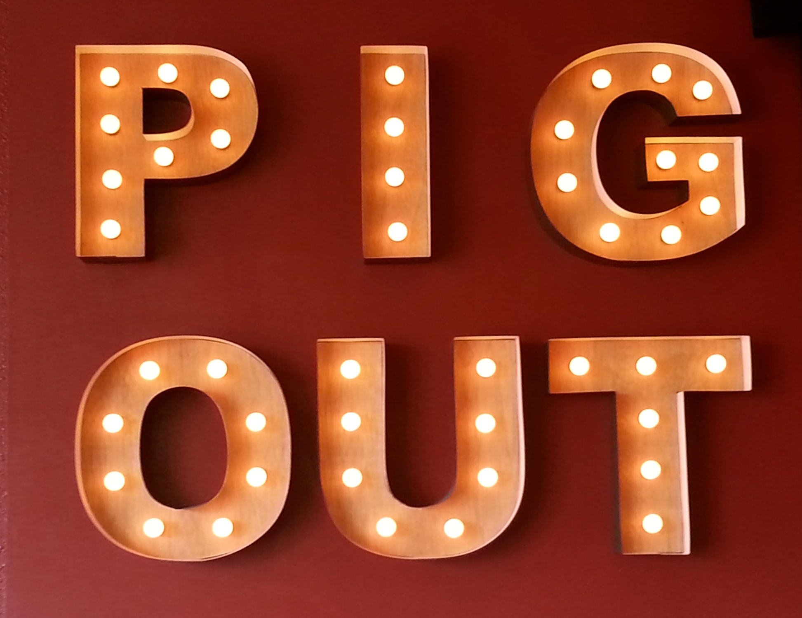

Design Best Practice Checklist
To view a detailed evaluation of the JavaJam site created in earlier chapters, please select a Design Best Practice topic from the tabs on the right.
Colors & Graphics
- The color scheme is very neutral and definitely limited to a maximum of 3 or 4 colors.
- The color is used consistently throughout the site.
- Background and text colors do have sufficient contrast.
- Color is not used alone to convey meaning. Descriptions and photos are included.
- The use of colors and graphics possibly enhances rather than detracts from the site.
I personally don't care for the header font, I think it detracts. Also, I find the colors very
bland and think that they could have used more appealing colors for this website.
- Graphics do not seem to slow download significantly. This may be due to the thumbnails used
on the music tab.
- Image tags do use the alt attribute to configure alternate text replacement.
- There are no animated images, so they don't distract from the site.